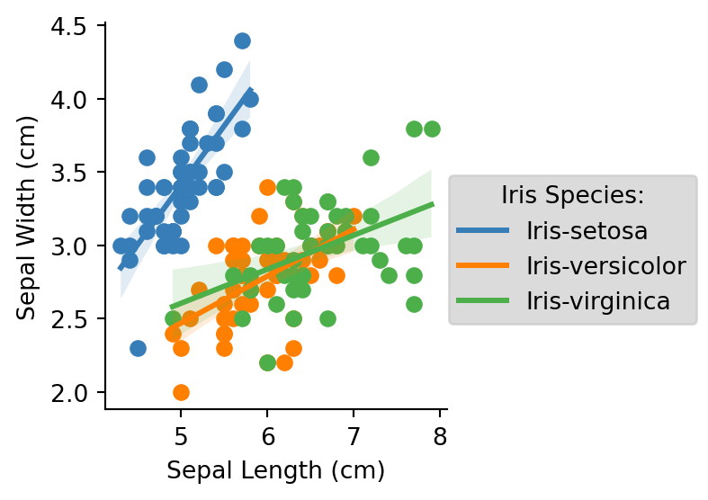

import pandas as pd
import matplotlib.pyplot as plt
import seaborn as snsI used the free Iris data set and python to conduct analysis and create visualizations
Importing and loading required packages
The following code is importing both the pandas and matplotlib.pyplot package so specific functions can be used to analyze and visualize the data! Lets get started with exploring. It is important to note that these packages need to be installed first on your computer before you can run this
Importing iris data set
The iris data set is a free data set that is available! Below I am importing the data using the pd.read_csv function.
# Create column names for dataframe
col_names = ['sepal_length_cm','sepal_width_cm','petal_length_cm','petal_width_cm','species']
# Download data from url
csv_url = 'https://archive.ics.uci.edu/ml/machine-learning-databases/iris/iris.data'
# Import url using read_csv
iris = pd.read_csv(csv_url, names = col_names)Gaining a general oversight of the data
The head() and tail() functions give a general oversight of what the data is comprised of in terms of rows and columns. Moreover, we can view the first and last 5 rows of data.
iris.head()
iris.tail()| sepal_length_cm | sepal_width_cm | petal_length_cm | petal_width_cm | species | |
|---|---|---|---|---|---|
| 145 | 6.7 | 3.0 | 5.2 | 2.3 | Iris-virginica |
| 146 | 6.3 | 2.5 | 5.0 | 1.9 | Iris-virginica |
| 147 | 6.5 | 3.0 | 5.2 | 2.0 | Iris-virginica |
| 148 | 6.2 | 3.4 | 5.4 | 2.3 | Iris-virginica |
| 149 | 5.9 | 3.0 | 5.1 | 1.8 | Iris-virginica |
Great! Now we know what our data looks like. However, I want to make sure the data format is okay. To do so, I am going to confirm the data types of iris using the .dtypes. function. We can now see that the columns are all floats except the species column. This looks all good!
iris.dtypessepal_length_cm float64
sepal_width_cm float64
petal_length_cm float64
petal_width_cm float64
species object
dtype: objectData tidying
The following lines of code are tidying the data set. The code is looking to see if the data set have any NA’s. We can now see that there is zero NA’s. This means we do not need to drop any rows.
iris.isna().sum().sum()0Data manipulation
The following lines of code are manipulation the data set. The code is converting centimeters to millimeters. First, I created a function that converts from cm to mm and used .apply to apply to specific columns.
def cm_to_mm(cm):
return cm * 10
iris['sepal_length_mm'] = iris['sepal_length_cm'].apply(cm_to_mm)
iris['sepal_length_mm'] = iris['sepal_width_cm'].apply(cm_to_mm)
iris['petal_length_mm'] = iris['petal_length_cm'].apply(cm_to_mm)
iris| sepal_length_cm | sepal_width_cm | petal_length_cm | petal_width_cm | species | sepal_length_mm | petal_length_mm | |
|---|---|---|---|---|---|---|---|
| 0 | 5.1 | 3.5 | 1.4 | 0.2 | Iris-setosa | 35.0 | 14.0 |
| 1 | 4.9 | 3.0 | 1.4 | 0.2 | Iris-setosa | 30.0 | 14.0 |
| 2 | 4.7 | 3.2 | 1.3 | 0.2 | Iris-setosa | 32.0 | 13.0 |
| 3 | 4.6 | 3.1 | 1.5 | 0.2 | Iris-setosa | 31.0 | 15.0 |
| 4 | 5.0 | 3.6 | 1.4 | 0.2 | Iris-setosa | 36.0 | 14.0 |
| ... | ... | ... | ... | ... | ... | ... | ... |
| 145 | 6.7 | 3.0 | 5.2 | 2.3 | Iris-virginica | 30.0 | 52.0 |
| 146 | 6.3 | 2.5 | 5.0 | 1.9 | Iris-virginica | 25.0 | 50.0 |
| 147 | 6.5 | 3.0 | 5.2 | 2.0 | Iris-virginica | 30.0 | 52.0 |
| 148 | 6.2 | 3.4 | 5.4 | 2.3 | Iris-virginica | 34.0 | 54.0 |
| 149 | 5.9 | 3.0 | 5.1 | 1.8 | Iris-virginica | 30.0 | 51.0 |
150 rows × 7 columns
Data analysis of species
Below are lines of code that are summarizing the data based on specific attributes. The following is grouping the data by flower species, and calculating the mean of sepal length, sepal width, and petal length. This data is added to a new data frame called “species_summary”. For the purpose of this question, we are only interested in using columns that contain data in cm.
species_summary = iris.groupby('species').agg({
'sepal_length_cm': ['mean', 'min', 'max'],
'sepal_width_cm': ['mean', 'min', 'max'],
'petal_length_cm': ['mean', 'min', 'max']}).reset_index()
species_summary.columns = ['species',
'mean_sepal_length', 'min_sepal_length','max_sepal_length',
'mean_sepal_width', 'min_sepal_width', 'max_sepal_width',
'mean_petal_length', 'min_petal_length', 'max_petal_length']Data visualization of sepal length vs sepal width of species
Now, lets visualize the data! This will help us visualize if there are any notable differences in sepal length vs width of different Iris species. The code lines below are utilizing the matlibplot package to visualize the data. This data is a scatter plot with sepal length on the x-axis and sepal width on the y-axis, with the color of data points being differentiated by species Additionally, the graph is faceted by species of the penguins
# Create colorblind friendly palette
c_palette = ["#377eb8", "#ff7f00", "#4daf4a"]
# Create plot
iris_plot = sns.FacetGrid(iris, hue = "species", palette = c_palette)
iris_plot.map(plt.scatter, "sepal_length_cm", "sepal_width_cm")
# Add regression line
iris_plot.map(sns.regplot, "sepal_length_cm", "sepal_width_cm", scatter = False)
# Add legend
iris_plot.add_legend(title="Iris Species:", frameon = True, facecolor = "lightgrey")
# Fix labels
iris_plot.set_axis_labels("Sepal Length (cm)", "Sepal Width (cm)")
iris_plot.set_titles("Scatterplot with Linear Regression Lines by Species")
# Show the plot
plt.show()